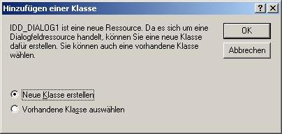
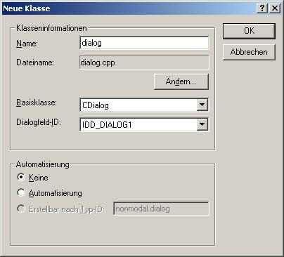
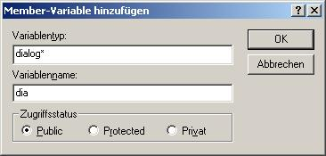
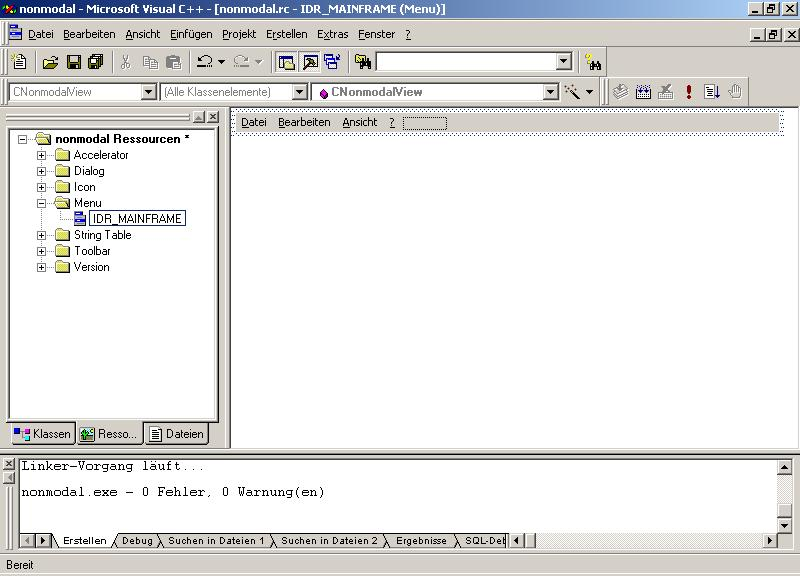
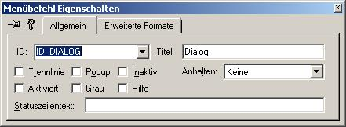
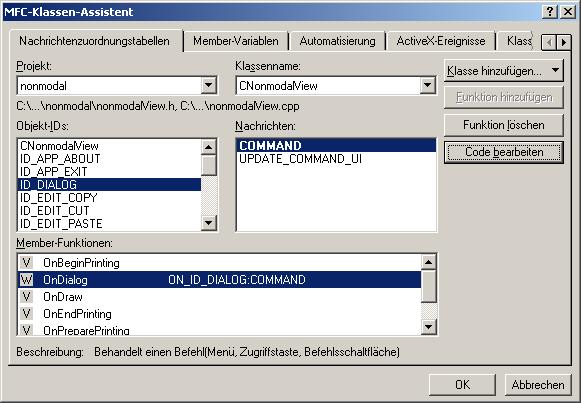

- Zuerst wird ein neues Projekt gebraucht...
-> Projektname : nonmodal
-> SDI Anwendung
- Dann braucht man wie beim modalen Dialog eine Dialog-Ressource:
-> Auf die Ressourcenansicht wechseln
-> Rechte Maustaste auf Dialog
-> Dialog einfügen
- Ich lass den Dialog mal leer, für dieses Beispiel ist es nicht notwendig Steuerelemente einzufügen, weil das genauso geht, wie beim modalen Dialog:
-> Den Klassen-Assistenten aufrufen
-> es wird automatisch eine Klasse für den Dialog erstellt...


- Die Datei in der sich die neue Klasse befindet muss noch in die Datei CnonmodalView.h includiert werden:
die Datei nonmodalView.h sollte so aussehen:
// nonmodalView.h : Schnittstelle der Klasse CNonmodalView
//
/////////////////////////////////////////////////////////////////////////////
#if !defined(AFX_NONMODALVIEW_H__01C1A223_FB65_45AA_9668_C87CB57D5471__INCLUDED_)
#define AFX_NONMODALVIEW_H__01C1A223_FB65_45AA_9668_C87CB57D5471__INCLUDED_
#if _MSC_VER > 1000
#pragma once
#endif // _MSC_VER > 1000
#include "dialog.h"
class CNonmodalView : public CView
{
etc...
- Variable für den Dialog zur Klasse CnonmodalView hinzufügen:
-> mit der rechten Maustaste auf die Klasse CnonmodalView drücken
-> auf Member-Variable hinzufügen... drücken

- Varable muss im Konstruktor initialisiert werden:
CNonmodalView::CNonmodalView()
{
// ZU ERLEDIGEN: Hier Code zur Konstruktion einfügen,
dia = NULL;
}
- Nun brauchen wir einen Eintrag in der Menüleiste:
-> Auf die Ressourcenansicht wechseln
-> auf Menü doppelt klicken
-> auf IDR_MAINFRAME doppelt klicken

-> Einen neuen Eintrag hinzufügen mit dem Namen : Dialog. Nun Popup deaktivieren und eine ID eingeben (selber aussuchen; ist egal was). Hinweis : dadurch wird der Button im Menü zu einem wirklichen Button, das heißt es geht beim Klick kein Menü auf wie sonst.
-> Sich die eben vergebene ID merken

- Klassenassistenten öffnen:
-> Klassenname CnonmodalView einstellen
-> nach der ID suchen
-> Funktion hinzufügen drücken

-> Code bearbeiten drücken
void CNonmodalView::OnDialog()
{
// Nur das erste Mal Dialog erstellen
if (dia == NULL)
{
// Objekt für Dialog erstellen
dia = new dialog();
}
// Wenn Dialog gerade nicht läuft
if (dia->GetSafeHwnd() == NULL)
{
// Dialog in Windows erstellen
// Die MFC braucht des
// 1. Parameter : Klassenname.IDD liefert Ressource-ID vom DIALOG
// 2. Parameter : Zeicher auf die View, muss so sein
dia->Create(dialog.IDD,this);
// Zeige Dialog
dia->ShowWindow(true);
}
}
- Um den Dialog zu zerstören müssen noch die beiden Handler für den OK und den Abbrechen Button in der Dialogklasse dialog geändert werden.
-> Klassenassistent
-> Klassenname = dialog
-> IDOK suchen, Funktion hinzufügen, Code bearbeiten
void dialog::OnOK()
{
CDialog::OnOK();
// Dialog zerstören
DestroyWindow();
}
-> Klassenassistent
-> Klassenname = dialog
-> IDCANCEL suchen, Funktion hinzufügen, Code bearbeiten
void dialog::OnCancel()
{
CDialog::OnCancel();
// Dialog zerstören
DestroyWindow();
}
- Fertig